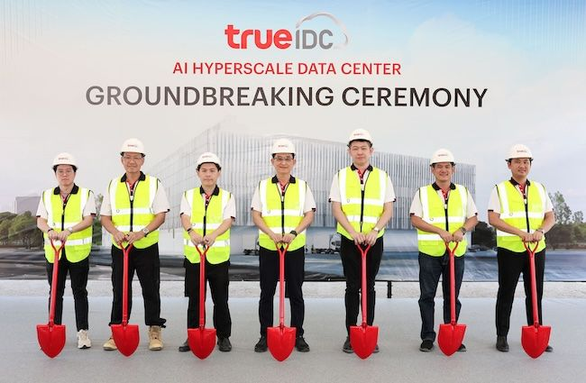

True IDC: un mega data center EEC pour accelerer l'IA souveraine thai
Le communiqué officiel True IDC du 1 avril 2026 annonce un nouveau mega data center AI Hyperscale dans l'Eastern Economic Corridor (EEC), avec une capacite cible allant jusqu'a 250 MW. L'angle revendique est explicite: relier croissance IA, resilience nationale et souverainete des donnees.

1. Ce qui est annonce officiellement
True IDC, filiale du groupe Charoen Pokphand, annonce le developpement d'un nouveau site AI Hyperscale en Thaïlande dans l'EEC. Le communiqué mentionne une strategie modulaire, une mise en service en premiere phase a partir de 2027 et une dynamique d'investissement BOI totalisant plus de 77 milliards de baht.
2. Pourquoi c'est un signal souverainete IA
Le message central de l'annonce est le passage d'une logique de simple capacite cloud vers une logique de controle national des actifs numeriques. True IDC parle de "Data Sovereignty" et de "Security Economy", ce qui rapproche l'infrastructure IA des enjeux de continuite economique et de protection des donnees critiques.
3. Lecture operationnelle pour les organisations
Pour une feuille de route IA souveraine, cette annonce rappelle trois priorites: reserver des capacites d'hebergement IA pilotables localement, aligner les politiques de residence des donnees avec les contraintes metier, et planifier les dependances energétiques/industrielles des futurs workloads IA a grande echelle.
Lancer un audit "capacite IA + souverainete data" pour identifier quels cas d'usage critiques doivent migrer en priorite vers des infrastructures regionales gouvernables.
Demarrer le cadrage